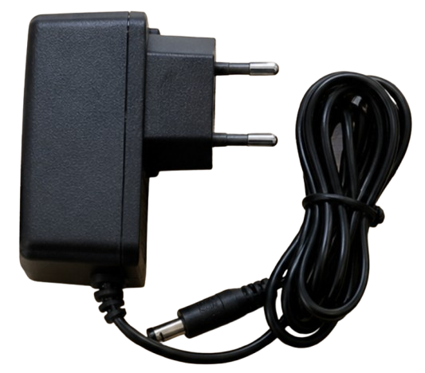

Kondisi dipantau
Data dari sensor dapat menjadi salah satu masukan untuk mengetahui perubahan kelembapan.
Pos jaga 03 · Menjaga
AutoSpray adalah rancangan sistem yang dapat membantu mengalirkan air ketika kondisi gambut perlu dijaga. Pompa dan katup menjadi bagian dari alur tersebut; semuanya harus dirancang sesuai lokasi dan diuji sebelum digunakan.
 Contoh komponen · pompa air
Contoh komponen · pompa airGambaran rancangan
Ini penjelasan konsep, bukan petunjuk pemasangan. Kondisi sumber air, area gambut, daya, dan pengendalian harus diperiksa oleh tim yang berwenang.
Data dari sensor dapat menjadi salah satu masukan untuk mengetahui perubahan kelembapan.
Jika batas yang disepakati terlewati, pengendali dapat mengaktifkan atau menghentikan aliran.
Pompa membantu memindahkan air, sementara katup mengatur jalur alirannya.
Komponen dalam berkas proyek
Foto ini menunjukkan contoh komponen yang diberikan. Foto komponen bukan bukti bahwa seluruh perangkat sudah dirangkai atau bekerja di lapangan.
Mendorong air melalui jalur yang sudah dirancang.

Membuka atau menutup aliran air berdasarkan kendali.

Berperan sebagai sakelar kendali untuk beban listrik yang sesuai rancangan.

Contoh sumber daya; kecocokan tegangan dan arus wajib diperiksa.
Sistem pembasahan di lahan gambut harus mempertimbangkan sumber air, dampak lingkungan, kebutuhan daya, cuaca, dan pemantauan petugas. Nilai ambang atau jadwal operasi tidak ditetapkan pada halaman ini.
Status konsep
Membantu menjaga kondisi kelembapan dengan mengurangi kebutuhan mengaktifkan pompa secara manual setiap saat.
Rancangan aliran air, sensor yang sesuai, pengendali, sumber daya, dan pengujian untuk keadaan lokasi sebenarnya.
AutoSpray dijelaskan sebagai konsep. Situs ini belum membuktikan pompa atau katup telah tersambung dan bekerja otomatis.
IoT Monitoring menjelaskan cara sensor mengumpulkan data yang dapat menjadi salah satu masukan untuk rancangan ini.